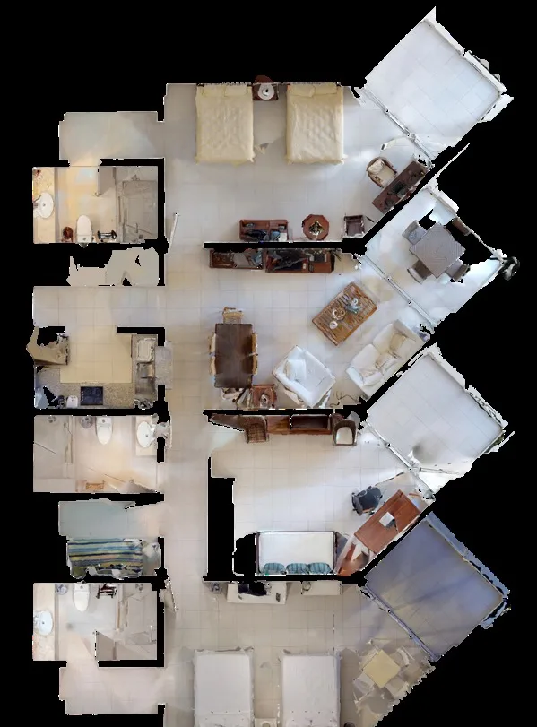
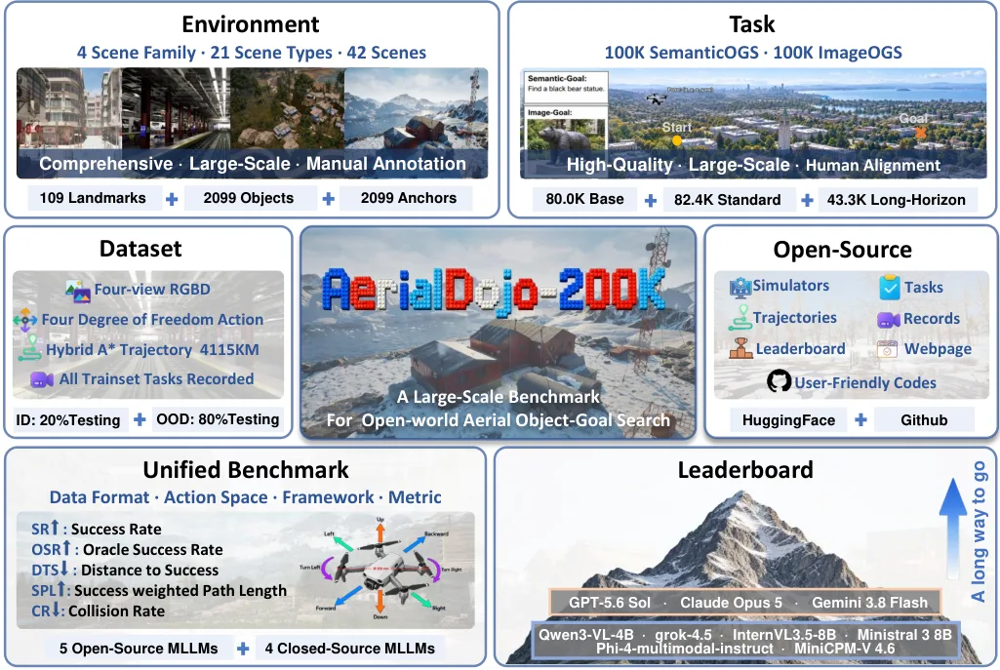
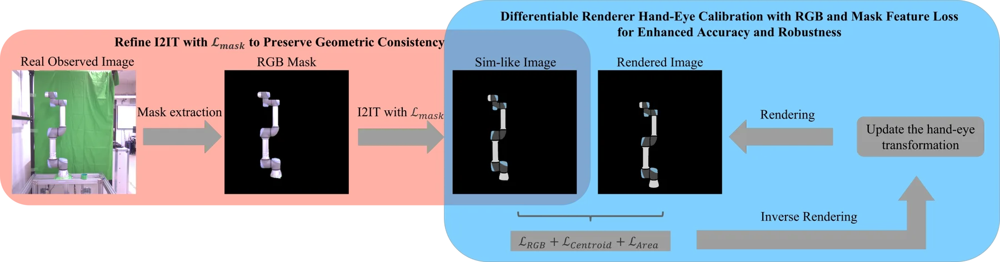
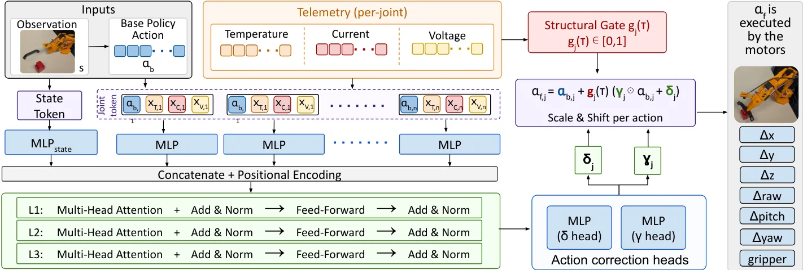
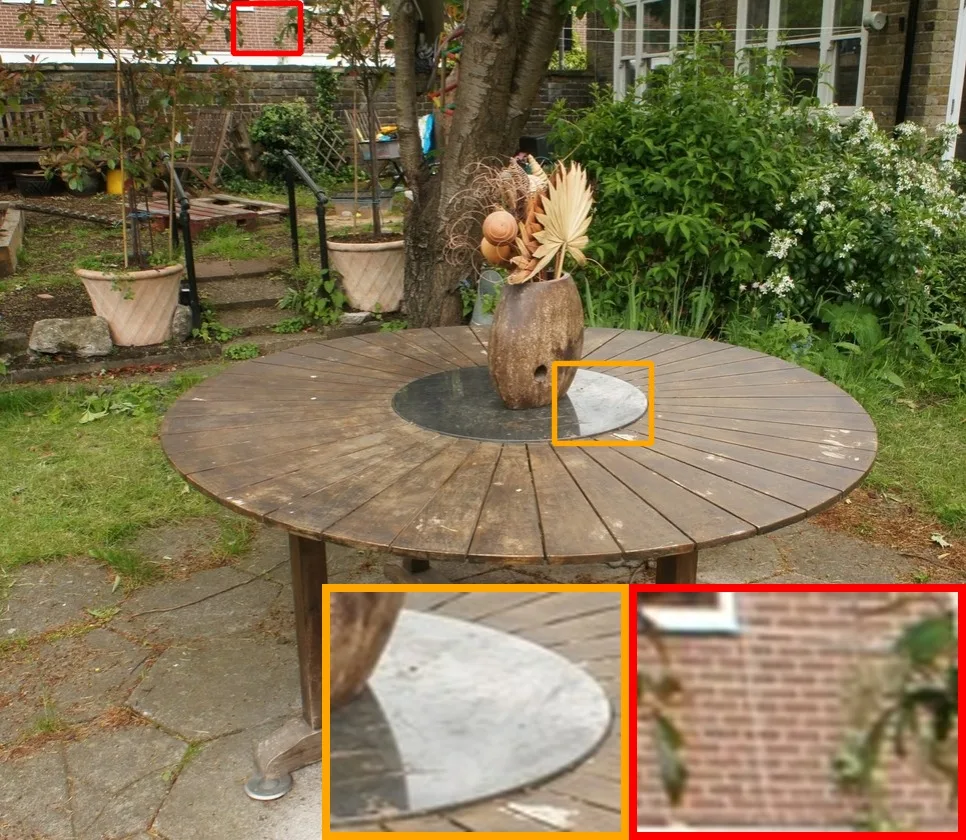

新论文 · 日期 2026-09-30 · score 11 · A层 · Embodied Navigation / VLN / Spatial Reasoning · cs.CV, cs.AI, cs.RO
内容级别：半海报
作者：Yunzhe Xu, Zhe Liu
评分 11/10
多智能体 VLN约束感知基准共享拓扑记忆LLM 子任务调度冲突消解（CBS）失败验证排除Space 级指标设计
一句话工作总结：MAVLN 给出 11,724 条约束标注多智能体导航 episode；TRISS 用“LLM 调度 + 共享拓扑记忆 + Hungarian/CBS 冲突消解”做基线，在 oracle 调度下 Val-Unseen SR 9.1 / SPL 4.0，而 oracle 规划器可达 89.1 SR，说明瓶颈在视点提议而非调度。
视觉语言导航（VLN）长期面向“单智能体执行单条指令”，但真实应用需要机器人团队完成单个智能体无法胜任的任务。本文给出多智能体 VLN 的首个系统形式化：把任务建模为带依赖约束与资源约束（presence lock 站位锁、holding chain 携带链）的受限协调问题。作者用一套四阶段、带校验的构造流水线实例化出 MAVLN 基准，包含 145 个场景、11,724 条 episode、最多 4 个智能体与三…
Vision-and-Language Navigation (VLN) has largely focused on a single agent following a single instruction, yet many real-world applications require teams of robots to tackle tasks beyond the capabilities of an…

新论文 · 日期 2026-09-30 · score 11 · A层 · Robust State Estimation / Uncertainty · cs.CV, cs.AI, cs.ET, cs.MM
内容级别：半海报
作者：Tongtong Feng, Xin Wang, Haoran Hou, Ren Wang, Weiran Wang, Shaokai Zhu, Ziqi Jia, Hao Wang, Yu-Wei Zhan, Zongyuan Wu, Jinghao Cui, Wenwu Zhu
评分 11/10
空中目标搜索基准开放世界 OOD 协议无 GPS 观测接口成功半径敏感性统一动作/观测接口多模态大模型评测
一句话工作总结：42 场景 / 205,732 任务实例 / 参考轨迹总长 4,115.313 km 的空中目标搜索基准；最好模型在 3 m 阈值下 Base SR 仅 3.20%（Claude Opus 5），Standard 0.49%，把阈值放宽到 5 m 时 Gemini 3.8 Flash 从 2.40% 跳到 11.16% 并反超，说明排名对成功半径极敏感。
开放世界空中目标搜索要求无人机类智能体自主探索大规模非结构化三维环境，并按语义描述或参考图像找到目标物体，而不是沿给定路线行走。现有研究仍处于早期，依赖小规模、环境特定的基准，且动作空间与数据格式各异，阻碍了大规模训练与跨基准评测。本文提出 AerialDojo-200K：场景数是当前最大同类基准的 3 倍、任务实例数是其 18.7 倍。它包含 42 个仿真场景（4 大场景族、21 种场景类型，含 18 个城市、1…
Open-world aerial object-goal search is a foundational yet challenging task, requiring aerial agents to autonomously explore large-scale, unstructured three-dimensional environments and reach target objects sp…

新论文 · 日期 2026-09-30 · score 11 · A层 · Robust State Estimation / Uncertainty · cs.RO, cs.CV, cs.GR
内容级别：半海报
作者：Xiaotian Zhang, Yusheng Wang, Naoya Kagawa, Noritaka Takamura, Keiji Okuhara, Hiroyasu Baba, Jun Ota
评分 11/10
手眼标定可微渲染RGB 梯度掩码质心/面积损失两段式优化观测可辨识性SIM 风格图像翻译
一句话工作总结：把可微渲染标定的监督从“二值掩码”换成“RGB 梯度 + 软质心 + 软面积”，并用 θ=0.25 的两段式策略（先冻旋转只调平移、后放开精修）；UR5e 抓取 88.9%（EasyHeC 42.6%）、插入 57.4%（EasyHeC 9.3%），DENSO VS060 上 77.8%/77.8%，且 1% 几何失配就让平均平移误差从 7.41 mm 涨到 21.92 mm。
手眼标定对精密操作至关重要。传统方法依赖标记，其精度受标记精度与可观测性影响；无标记方法（如基于学习的方案）用深度网络直接从图像提取关键点或特征，单张图即可求手眼变换。近期基于可微渲染的方法通过渲染二值掩码并与观测比较来实现无基准标记的标定，可解释性强，但二值掩码会丢失物体内部轮廓细节、降低精度，并存在优化不稳定与局部极小的问题。本文提出基于 RGB 的可微渲染框架，通过引入颜色与掩码几何特征提供更丰富的几何与外观…
Accurate hand-eye calibration is crucial for precision manipulation. Traditional methods rely on markers, with their precision dependent on marker accuracy and observability. In contrast, markerless methods, s…

新论文 · 日期 2026-09-30 · score 8 · A层 · Robotic Foundation Models / VLA · cs.RO
内容级别：半海报
作者：Som Sagar, Ransalu Senanayake
评分 8/10
执行器退化测试时自适应遥测条件策略有界动作校正严重度课程退化模型不匹配sim-to-real 热应力
一句话工作总结：把温度/电流/电压遥测变成动作校正的条件输入：轻量 Transformer 输出有界增益与残差，标称区间内由结构保证精确恒等；7 个受压条件平均增益 +18.3±2.9 pt（MRAC/L1 +15.5），真机 SO-101 加热条件下成功率 75%→85%、70%→85%。
机器人操作策略通常在“指令动作与训练时产生同样运动”的假设下训练，但真实硬件会违反这一假设：电机逐渐升温、接触时电流饱和、负载下电压跌落，使同一个策略动作产生更弱、更迟或更噪的运动。这些条件其实已被机载遥测（关节温度、电机电流、供电电压）测量，但通常只用于日志或安全检查，而非策略自适应。本文提出 TeAR（Telemetry-Aware Action Rectification）：一种与策略无关的方法，把冻结的操作…
Robot manipulation policies are usually trained under the assumption that a commanded action produces the same motion as it did during training even after hours of operation. Real hardware violates this assump…
新论文 · 日期 2026-09-30 · score 10 · A-层 · 3D/4D Spatial Perception · cs.CV, cs.GR, cs.RO
内容级别：简报式摘要
作者：Shuzhao Xie, Lelin Wang, Guying Lin, Zhi Wang, Minchen Li
评分 10/10
可形变场景重建可仿真资产智能体式重建管线曲线/曲面/体积表示关节分解行为测试驱动修订
一句话工作总结：把 3D 重建升级为“可仿真资产生产”：刚体/关节/可形变分别处理，曲线、曲面、体积三种形变表示各自成管；场景级先验定尺度布局、物体级生成网格补细节，行为测试触发定向修订。
从真实观测重建“可直接进仿真”的三维场景对机器人、游戏与沉浸式应用很有价值，但现有方法大多假设物体是刚体，对可形变物体留出空白——它们的可仿真几何取决于维度（曲线、曲面或体积），其行为也可能超出弹性模型。本文提出 CoDimRecon：一个从多视图 RGB 观测重建含刚体、关节体与可形变体的可编辑场景的智能体框架。场景级几何先验提供尺度与布局，物体级生成网格引导智能体得到细节紧凑的几何；关节刚体被分解为可动部件并给…
Reconstructing simulation-ready 3D scenes from real-world observations enables robotics, gaming, and immersive applications, yet existing methods largely assume rigid objects. This leaves an important gap for…
新论文 · 日期 2026-09-30 · score 4 · A-层 · Robotic Foundation Models / VLA · cs.RO, cs.LG
内容级别：简报式摘要
作者：Haojian Huang, Zexi Li, Junhao Guo, Yehang Zhang, Wenxuan Peng, Bohan Zhou, Weilin Ruan, Leyi Wu, Chenxu Wang, Jianchong Su, Binghui Xie, Wosong Chen, Yingjie Xu, Tianhao Zhou, Suzeyu Chen, Pukun Zhao, Jiaqi He, Xinyi Li, Runze Li, Peiran Dong, Shaoxiang Dang, Jing Huang, Yingbing Chen, Yifan Chang, Tianyi Zhang, Shiyuan Deng, Haozhi Wang, Yangkai Wei, Wenqian Li, Han Yang, Kaiwen Zhou, Huaping Liu, James Cheng, Rui Shao, Donglin Wang, Yaochu Jin, Jianye Hao, Ying-Cong Chen, Yinchuan Li
评分 4/10
机器人上下文学习四类接口分类示范迁移世界模型控制评测协议划分
一句话工作总结：把机器人 ICL 拆成四类接口（上下文条件策略 / 几何示范迁移 / world-model 控制 / 技能与智能体执行），并把“对教学的响应性、物理迁移、经验保留收益”列为需要分开评测的三件事。
通用机器人必须推断新任务需要什么，并把这种理解转化为恰当的动作。机器人的上下文学习（ICL）通过在部署期保持神经参数不变、用示范与交互来引导既有能力，来支撑这一过程。本文围绕“上下文证据如何接到执行”这一接口组织文献，区分四类家族：上下文条件策略、几何示范迁移、基于世界模型的控制、以及基于技能与智能体的执行。比较这些接口可以厘清它们的迁移假设，以及训练、对应关系与记忆在“让上下文有用”中各扮演什么角色。论文横跨操作…
General-purpose robots must infer what a new task requires and translate that understanding into appropriate physical action. In-context learning (ICL) for robots supports this process by using demonstrations…

新论文 · 日期 2026-09-30 · score 14 · B层 · Neural Rendering / 3DGS / NeRF · cs.CV, cs.GR
内容级别：简报式摘要
作者：Pratik Singh Bisht, Andreas Kolb
评分 14/10
3D Gaussian Splatting神经残差场球谐替代表示压缩高光建模
一句话工作总结：用“逐 splat 紧凑外观特征 + 全局 MLP 预测视角相关残差”替代逐 splat 球谐，在高光与高频细节更好的同时把高斯数量减少最多 50%。
本文重新审视外观建模在 3D Gaussian Splatting（3DGS）中的作用，指出视角相关反射表达能力不足是表征冗余的关键驱动因素。标准 3DGS 用低阶球谐（SH）建模外观，限制了 splat 表达高频方向性效果的能力，通常只能通过增加 splat 数量来补偿。作者提出 NRF-GS：一种用共享神经残差场替代逐 splat 球谐基的混合表示。每个高斯只编码紧凑的外观特征与一个朗伯基色，而一个轻量的全局场…
We revisit the role of appearance modeling in 3D Gaussian Splatting (3DGS) and show that limited expressiveness in view-dependent reflectance is a key driver of representation redundancy. In standard 3DGS, low…
新论文 · 日期 2026-09-30 · score 3 · C层 · 纯 GNSS/INS / PPP-AR · eess.SP
内容级别：简报式摘要
作者：Scott Staniewicz, Geoffrey Gunter, Sara Mirzaee, Marin Govorcin, Talib Oliver-Cabrera, Heresh Fattahi
评分 3/10
相位解缠最小费用流InSAR整周赋值可靠性大规模效率
一句话工作总结：面向大干涉图的 MCF 相位解缠：固定似然比代价 + 整数查找表 + 并行增量最短路；74 M 像素 Sentinel-1 上 209 s（比单瓦片 SNAPHU 快 28 倍、内存 40%），并提升时间序列网络反演一致性。
二维相位解缠可能主导广域 InSAR 处理的算力与内存开销。本文提出 Whirlwind：面向大范围地表形变干涉图的最小费用流（MCF）解缠器。作者用多视干涉相位统计推导固定的似然比代价，并对局部相位梯度与相干性估计的不确定性做边缘化；紧凑的整数查找表与带 Dial 桶队列的并行增量式最短路求解器使 MCF 求解高效，同时避免依赖流量的代价重线性化。论文用多种评价标准检验这些速度与内存改进是否以解质量损失为代价：在…
Two-dimensional phase unwrapping can dominate computation and memory usage in wide-area Interferometric Synthetic Aperture Radar (InSAR) processing. Here we present Whirlwind, a minimum-cost-flow (MCF) unwrapp…